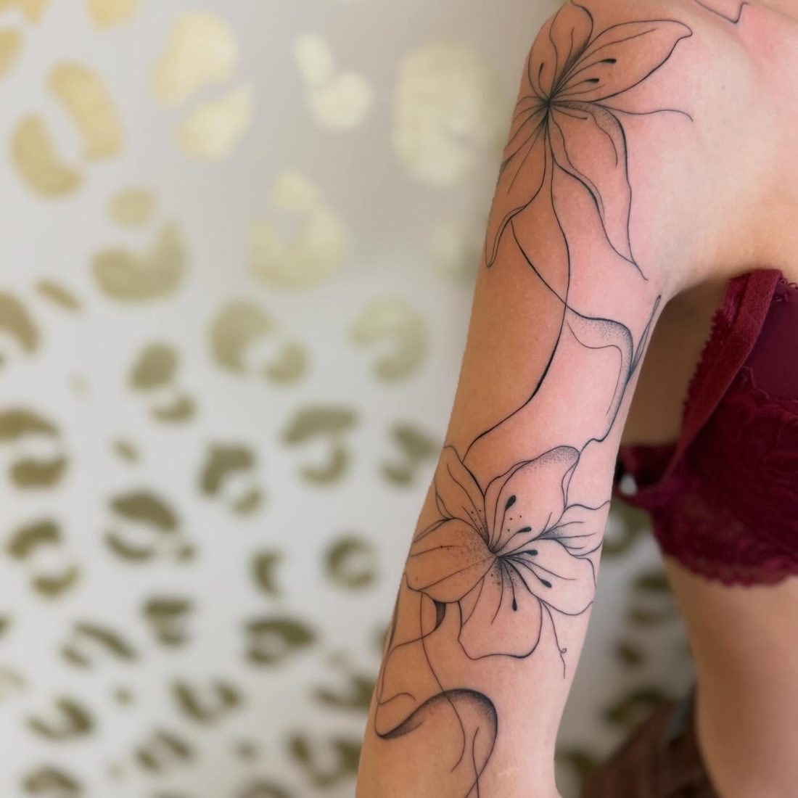
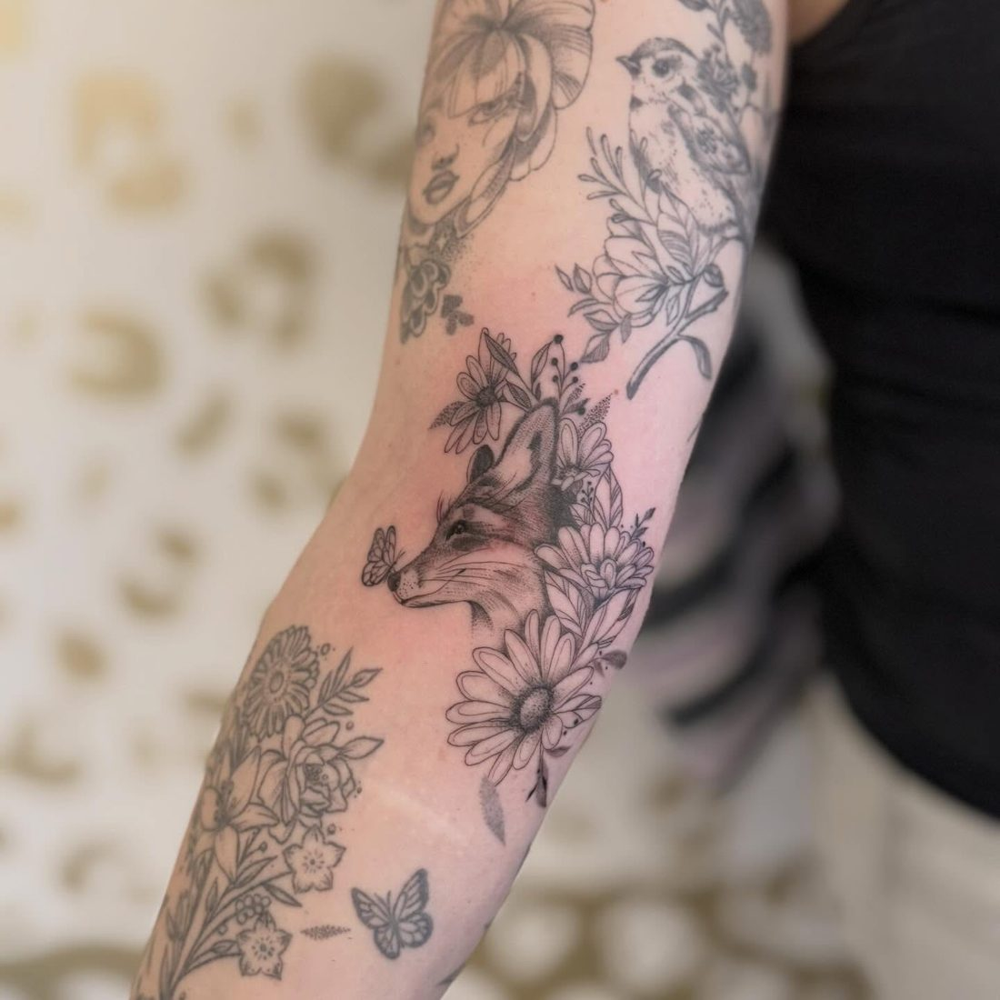
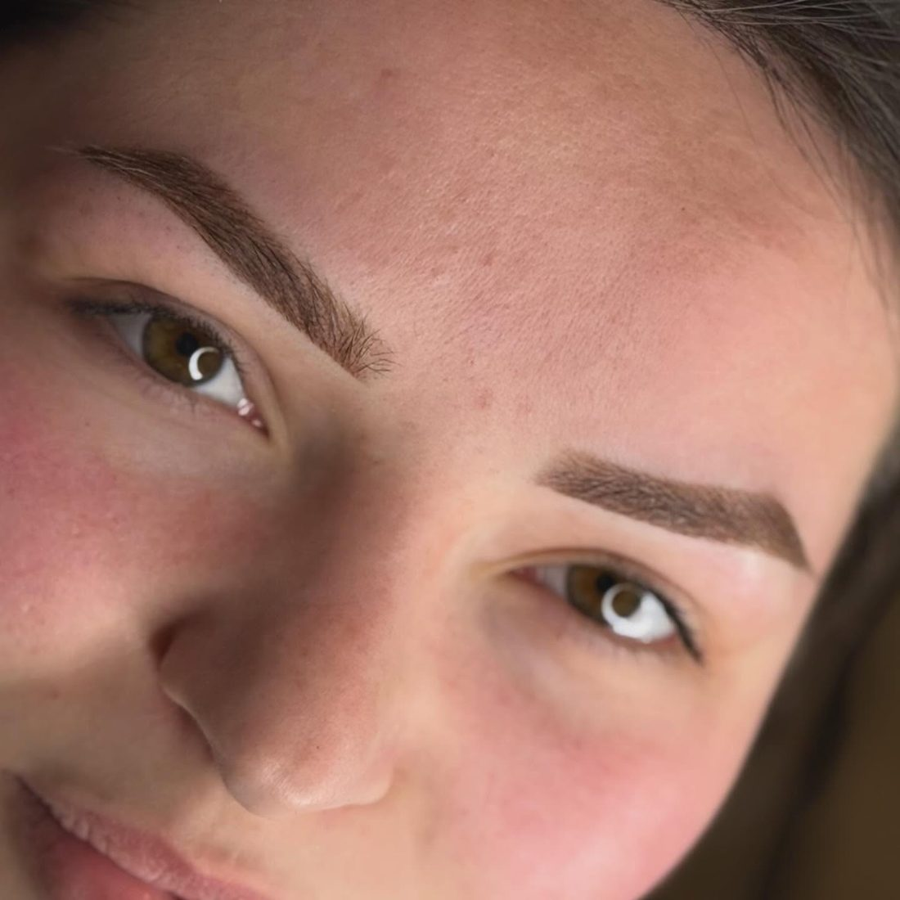
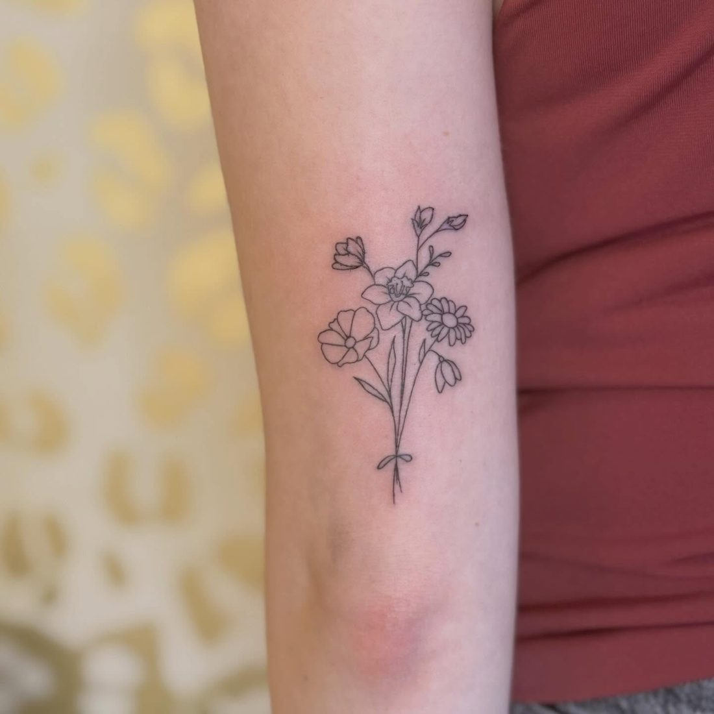
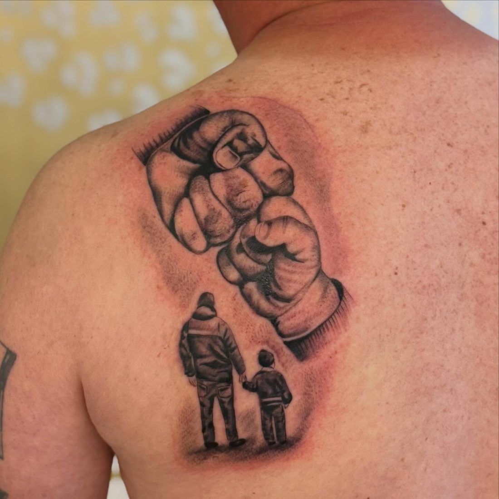
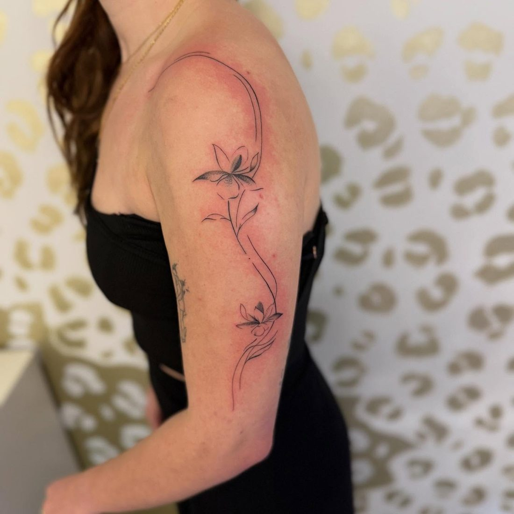
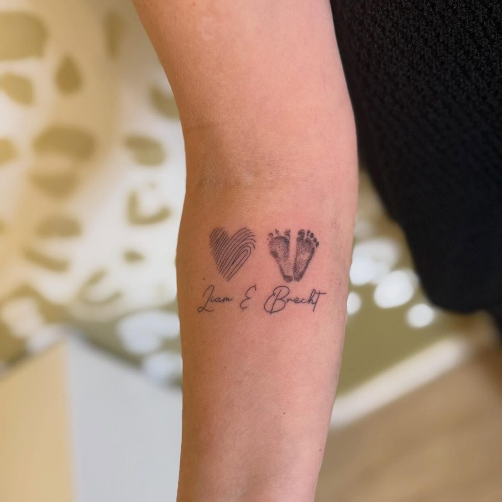
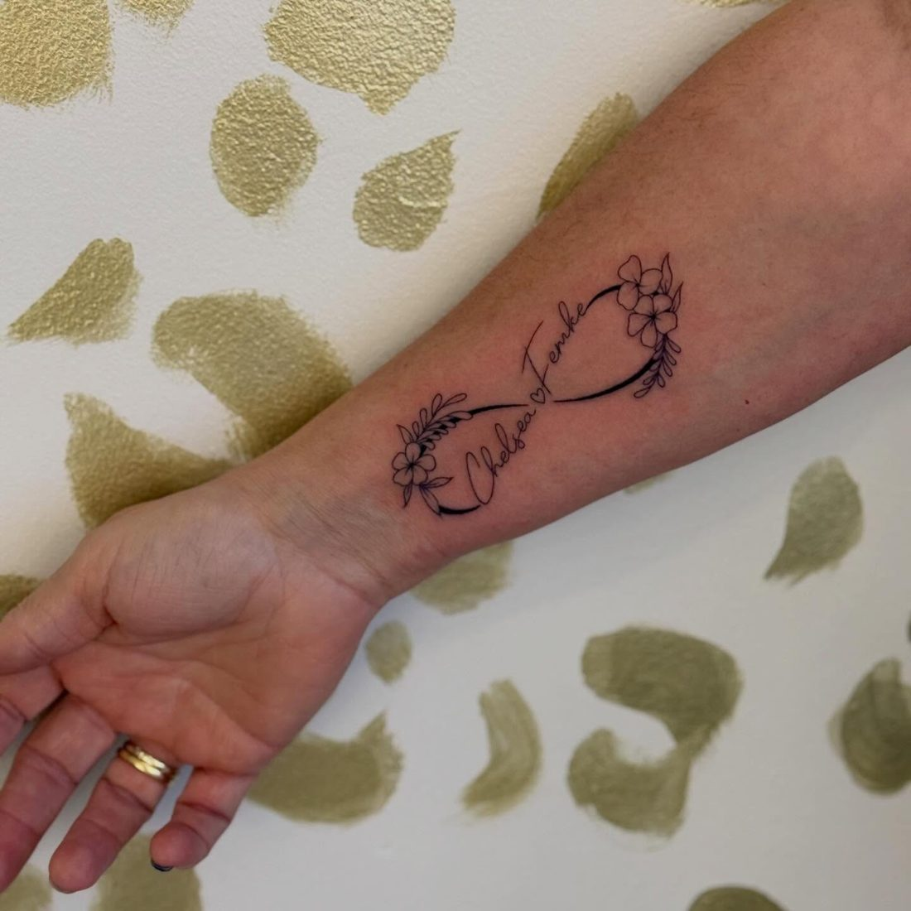

Tattoos
Van een klein teken met betekenis tot een volledige sleeve. Strakke lijnen en zachte schaduw.
- Fine line
- Zwart-grijs
- Bloemen en botanisch
- Lettering
Tattoo studio in Wellen
Fine line, zwart-grijs en persoonlijke ontwerpen. Ook microblading en powder brows.
5,0 op Google · 21 reviews

Diensten
Elk ontwerp wordt samen met jou uitgewerkt, tot het precies klopt.

Van een klein teken met betekenis tot een volledige sleeve. Strakke lijnen en zachte schaduw.

Microblading en powder brows. Dezelfde rust en precisie, voor wenkbrauwen die bij je gezicht passen.
Werk
Een greep uit het werk van de afgelopen maanden.







Over Laura
“Vriendelijk, zorgzaam en professioneel.”Davy Daniels, Google review
Klanten schrijven dat Laura proper werkt, de tijd neemt voor je wensen en je meteen op je gemak stelt. Veel mensen komen terug voor hun volgende tattoo.
Reviews
“Voor mij heeft ze een heel bijzondere tattoo gezet: het voetafdrukje van ons zoontje. Zoiets persoonlijks vraagt om iemand die met zorg, precisie en respect werkt, en dat heeft ze meer dan bewezen.”
“Al mijn tattoos zijn prachtig gezet met fijne, strakke lijnen. Mijn vingertattoos houden ook enorm goed, ondanks dat ik kapster ben.”
“Ze nam de tijd om mijn ideeën te bespreken en kwam met een ontwerp dat precies aansloot bij wat ik in gedachten had.”
Zo werkt het
Vertel wat je wilt, waar op je lichaam en hoe groot. Voorbeelden helpen.
Laura tekent een ontwerp uit dat bij jou en je huid past.
In de studio nemen we rustig de tijd, in een ontspannen sfeer.
Je krijgt duidelijke tips zodat je tattoo mooi geneest.
Afspraak maken
Mail Laura met je idee, de plaats op je lichaam en wat voorbeelden. Je krijgt zo snel mogelijk antwoord.
Mail Laura